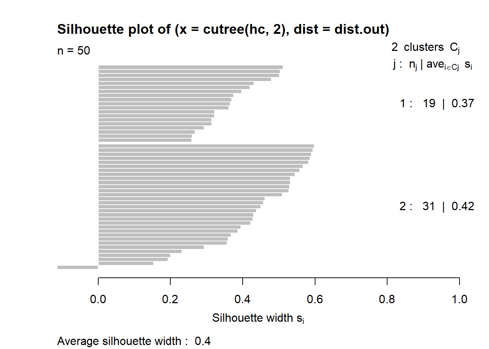
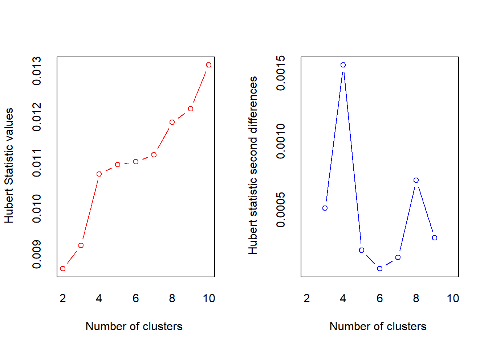
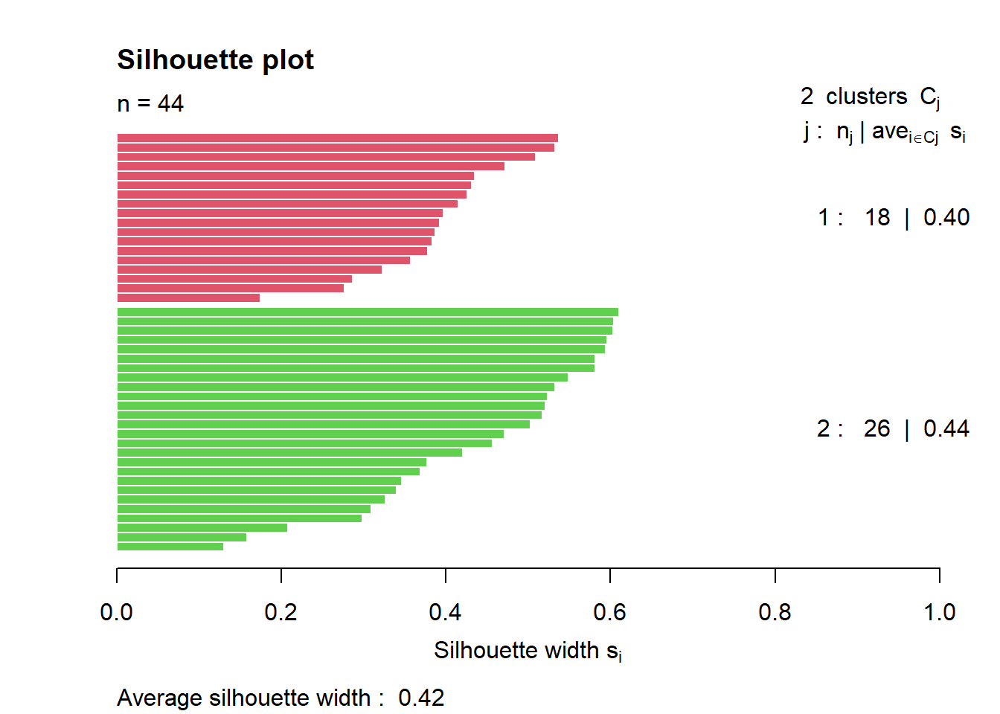

Chapter 4 Compute pairewise distance matrices
4.0.1 Single Linkage
4.0.2 Complete Linkage
Visualization of hclust

4.0.3 Centroid
4.1 Methods for determining number of clusters
4.1.1 Elbow method for k-means clustering
set.seed(123)
# Compute and plot wss for k = 2 to k = 15
k.max <- 15 # Maximal number of clusters
df.out <- df
wss <- sapply(1:k.max,
function(k){kmeans(df.out, k, nstart=10 )$tot.withinss})
plot(1:k.max, wss, type="b", pch = 19, frame = FALSE, xlab="Number of clusters K", ylab="Total within-clusters sum of squares")
abline(v = 3, lty =2)According to the elbow method, the optimal number of clusters suggested for the K-means algorithm is 3.
4.1.2 Average silhouette method for k-means clustering
k.max <- 15
data.out <- df
sil <- rep(0, k.max)
# Compute the average silhouette width for
# k = 2 to k = 15
for(i in 2:k.max){
km.res <- kmeans(df.out, centers = i, nstart = 25)
ss <- silhouette(km.res$cluster, dist(df.out))
sil[i] <- mean(ss[, 3])
}# Plot the average silhouette width
plot(1:k.max, sil, type = "b", pch = 19,
frame = FALSE, xlab = "Number of clusters k")
abline(v = which.max(sil), lty = 2)
According to the silhouette method the optimal number of clusters suggested for the Kmeans algorithm is 2.
4.1.3 Average silhouette method for PAM clustering

These two components explain 86.75% of the point variability.
This table shows how to use the average silhouette width value:
Range of SC : Interpretation 0.71-1.0 : A strong structure has been found 0.51-0.70 : A reasonable structure has been found 0.26-0.50 : The structure is weak and could be artificial < 0.25 : No substantial structure has been found
According to the table, the fit is weak.
4.1.4 Average silhouette method for hierarchical clustering

Average silhouette width : 0.4
This table shows how to use the average silhouette width value:
Range of SC: Interpretation 0.71-1.0 : A strong structure has been found 0.51-0.70 : A reasonable structure has been found 0.26-0.50 : The structure is weak and could be artificial < 0.25 : No substantial structure has been found
The result for hierarchical clustering is similar to that of PAM. The conclusion we can make is that fit is weak.
4.1.5 Gap Statistic for K means clustering
# Compute gap statistic
gap_stat <- clusGap(df, FUN = kmeans, nstart = 25, K.max = 10, B = 50)
# Print the result
plot(gap_stat, frame = FALSE, xlab = "Number of clusters k")
abline(v = 4, lty = 2)
According to the Gap Statistic the ’optimal number of clusters chosen for the Kmeans algorithm is 4!
Using the NbClust package which uses a vote to chose the number of clusters. The following example determine the number of clusters using all statistics:
res.nb <- NbClust(df, distance = "euclidean",min.nc = 2, max.nc
= 10, method = "complete", index ="all")
## *** : The Hubert index is a graphical method of determining the number of clusters.
## In the plot of Hubert index, we seek a significant knee that corresponds to a
## significant increase of the value of the measure i.e the significant peak in Hubert
## index second differences plot.
## ## *** : The D index is a graphical method of determining the number of clusters.
## In the plot of D index, we seek a significant knee (the significant peak in Dindex
## second differences plot) that corresponds to a significant increase of the value of
## the measure.
##
## *******************************************************************
## * Among all indices:
## * 9 proposed 2 as the best number of clusters
## * 4 proposed 3 as the best number of clusters
## * 6 proposed 4 as the best number of clusters
## * 2 proposed 5 as the best number of clusters
## * 1 proposed 8 as the best number of clusters
## * 1 proposed 10 as the best number of clusters
##
## ***** Conclusion *****
##
## * According to the majority rule, the best number of clusters is 2
##
##
## *******************************************************************When all statistics in the NbClust package are allowed to vote, the majority (in this case 9 out of 23) propose that the ‘optimal’ number of clusters should be 2.